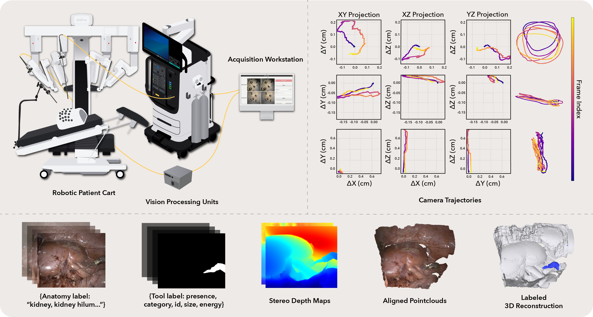

Dataset Overview
The iMED Challenge uses task-specific subsets of the broader iMED dataset, a synchronized multi-endoscope dataset for robot-assisted minimally invasive surgery. For the full iMED dataset, please visit the official website for more information: Full iMED dataset page (link placeholder).

The full iMED dataset contains 340 sequences, approximately 170K synchronized timepoints, and four views per timepoint collected across ex vivo, postmortem, and live surgical settings. It includes calibrated camera intrinsics, frame-wise ArUco-based pose estimates, inferred instrument masks, and structured metadata. The challenge benchmarks two task-specific subsets derived from this broader release.
Dataset Access
The dataset will be officially released through the UCL Research Data Repository (UCL RDR). Dataset access page: UCL Research Data Repository.
Task-specific subsets
| Task | Cases | Reference data / protocol | Main purpose |
|---|---|---|---|
| iMED PE | 69 train / 21 test | ArUco marker-based reference poses with markers inpainted in the released frames | Relative pose estimation under moving-camera, deformable scenes |
| iMED NVS | 20 sequences | Train on Endoscope 2 stereo video (~200 frames); test on held-out Endoscope 1 views (~200 frames) | Deformable novel view synthesis from a held-out endoscope viewpoint |
Subtask definitions
Pose Estimation case definition
Estimate accurate per-frame relative camera poses between two endoscopes in deformable surgical environments. Reference trajectories are derived from an ArUco marker-based pipeline, with markers removed from the released frames.
Deformable NVS case definition
Train on Endoscope 2 stereo video (approximately 200 frames) and synthesize held-out Endoscope 1 views (approximately 200 frames). This train-on-one-endoscope, test-on-another protocol evaluates geometric understanding rather than simple photometric interpolation.